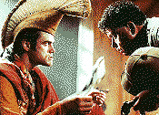

Contents | Features | Reviews | News | Archives | Store |
 |
|
| Movie Credits | Buy It! |
Ace Ventura II:
When Nature Calls
Review by Carrie Gorringe
 |
Directed and Written by Starring Jim Carrey, |
Just when you thought it was safe to go back into the cinema, another Ace Ventura movie has reared its ugly head. This sequel to the wildly successful 1994 Ace Ventura, Pet Detective has our intrepid hero (Carrey) undergoing a process of deep soul searching after the tragic demise of a raccoon during one of Ventura's inevitable rescue attempts -- this one occurring at some 5,000 feet. No doubt shaken by something approaching sorrow and guilt (although with the unidimensional Ventura it's difficult to know for certain), he has retreated to a Tibetan monastery, much to the dismay of the other monks. However, their salvation is at hand in the form of Fulton Greenwood (McNeice), a representative of the British ambassador to the fictional African country of Nibia. Ambassador Cadley (Callow) is concerned about the impending warfare between two local tribes, the Washati and the Washuto, both of which are prepared to fight to the death over the disappearance of a white bat considered sacred to both tribes. As might be expected, one side accuses the other of having stolen it -- hence the need for Mr. Ventura's services, which he provides with all requisite rubbery facial expressions and copious amounts of toilet humor. Upon hearing of Greenwood's request, Ventura's initial response is to tell Greenwood that his request is like his lower intestine: stinky and bloated. The non sequitor response notwithstanding, Ventura agrees to locate the missing bat.
Ace Ventura II is supposed to be a comedy, but ends up being only a tragic waste of Jim Carrey's innate talent. Two scenes in particular underscore the waste because they are so indicative of what Carrey can do with good material. Even if you're not a fan of anti-fur organizations, Carrey manages to humiliate a fur-bearing female and her much older spouse with a gesture that, although outrageous, manages to be both funny and thought-provoking without sinking to the level of the didactic. Later in the film, Carrey intends to make a recalcitrant suspect talk by scraping a knife and fork across a dinner plate (it does have an effect on the ears similar to that of nails riding down the surface of a chalkboard). Both of these scenes are evocative the best work and characters that Carrey brought to life on the Fox Television show In Living Color during the early '90s, notably Vera de Milo, the intellectually-vapid-but-vain female bodybuilder, and especially Fireman Bill, the psychopathic pyromaniac who always seemed to get the worst of his own fire-prevention tips, accepting his lot with glee -- call him the Wile E. Coyote of fire fighting, but add a masochistic streak to the analogy. Even in their unrepentant nastiness, those characters had a perversely endearing quality that made Carrey's work stand out from that of his equally talented colleagues; in this context, Carrey could use his facial and vocal contortions to excellent effect by playing them both with and against the strong satirical undercurrent of his characters.
In his movie career, however, Carrey has so far seemed to ignore the latter element of satire, much to the detriment of his work, and this film is no exception. It isn't coincidental that the above-mentioned scenes are the only ones which really have any sort of comic charge, and that is precisely because they have reasonably firm roots in social and/or cinematic conventions which are then turned squarely on their heads; after all, it is, as already noted, the kind of work at which Carrey excels. But his cinematic collaborators to date have only seen the visual manifestation of Carrey's talent and apparently want to turn him into the equivalent of all Three Stooges wrapped up into one package. Such a strategy might be fine for a five-minute skit, but it cannot sustain a ninety-minute film (regardless of what Stooges fans might have to say about it). Ace Ventura borrows the manic humor and nastiness of Fireman Bill, but, without context, the character is reduced to spouting childishly vulgar non sequitors in lieu of witty dialogue, and, quite simply, the non sequitors at best provide nothing more than momentary shock value. They, all of the rubbery faces, and all of the voice work in the world, no matter how well executed, don't coalesce often enough or effectively enough to propel this film beyond the uncomfortable impression that everyone in it is operating just beyond the realm of his or her abilities -- call it the Peter Principle as applied to Hollywood. Someone should have given writer-director Oedekerk a basic lesson in writing comedy, preferably after having tied him to a chair, and while scraping a knife and fork across a dinner plate. The thought of someone doing just that would be at least partial compensation for the audience's pain and suffering (although there can be none for poor McNeice and Callow, who must wonder what they have done to deserve this assignment). As for Carrey, who approved of Oedekirk's hiring after clashing with another director on the set, he should share his director's fate, if only to prevent him from making the same mistake again (he's already made it more than twice).
Somehow or other, it seems likely that Ace Ventura II will prove to be a big hit, if the box-office returns for the original Ace Ventura and the eponymous Dumb and Dumber are any indication. There are many who will be more than happy to fork over their money for the opportunity to watch Carrey working his facial and vocal magic, expecting nothing else in return, and that is a shame for those who know that Carrey is capable of far more than he delivers here. However, it has been reported that Mr. Carrey intends to go for yecchs rather than yuks in his next film, a black comedy entitled (at last report) Cable Guy; he intends to expand his repertoire by playing a demented cable technician who terrorizes poor Matthew Broderick. The project sounds less like an expansion of repertoire than a long-overdue return to his roots.
Contents | Features | Reviews | News | Archives | Store
Copyright © 1999 by Nitrate Productions, Inc. All Rights Reserved.